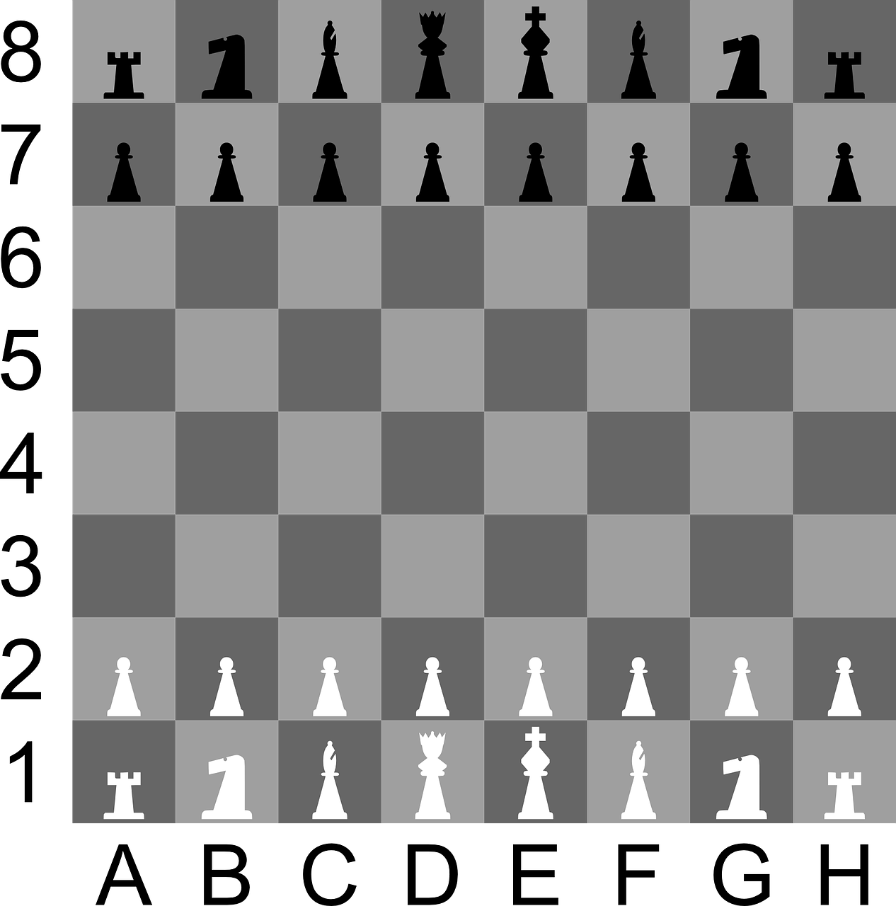
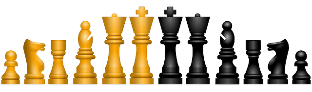

Ez az oldal a kedvenc játékomról, a sakkról szól, amelyhez sok személyes élményem is kötődik.
Rövid kedvcsináló videó a sakkról
A játékról
A sakk táblajáték két személy részére, és egyben sportág is. A „sakk” szó nemcsak a játékot
jelenti, hanem azt a helyzetet is, amikor az ellenfél királya „ütésben van”.
A sakkjátékot két játékos játssza egymás ellen a négyzet alakú, nyolc sorra és nyolc oszlopra felosztott
sakktáblán, 16–16, azaz összesen 32 bábuval. A két játékos bábui határozottan eltérő színűek. A színek
elnevezése világos, illetve sötét.
A tábla

Sakktábla az alapállással
A tábla mindig akkor áll helyesen, ha a bal alsó sarokban sötét, a jobb alsóban pedig világos színű mező van.
Vízszintesen az 1-től 8-ig, arab számokkal jelölt sorok, függőlegesen az a–h betűkkel azonosított vonalak
vannak.
A figurák

Sakkbábuk: gyalog, huszár, bástya, futó, vezér, király
A játék kezdetén a világosnak és a sötétnek ugyanannyi figurája van:
1–1 király,
1–1 vezér (alternatív neve: „királynő”),
2–2 bástya (alternatív neve: „torony”),
2–2 huszár (alternatív neve: „ló”),
2–2 futó
8–8 gyalog (alternatív neve: „paraszt”).
A figurák kiindulási helyzetét, illetve mozgatásuk lehetőségeit a játék szabálya határozza meg.
A játszma kimenetele
A játszma valamelyik fél győzelmével ér véget:
Ha királyunk sakkban áll, és a sakk megszüntetése semmilyen módon sem lehetséges, a játszma véget ért:
mattot kaptunk. A másik fél nyerte meg a játszmát.
Ha időre játszunk, és lejárt a gondolkodási időnk, elveszítettük a játszmát.
Ha olyan anyagi hátrányba kerültünk, hogy a folytatás csak időhúzás lenne, mert az ellenfelünk előbb-utóbb
biztosan mattot ad, akkor a játszmát feladhatjuk.
A játék kimenetele további esetekben döntetlen:
Patt: A lépésre következő félnek nincs semmilyen lépéslehetősége, a királya azonban nincs sakkban.
Az ötven lépés szabálya: Ha úgy történik a játszma során 50 lépés, hogy közben nincs sem ütés, sem
gyaloglépés,
és bármelyik játékos igényli, akkor a játszma döntetlen.
Háromszori tükörkép: A táblán háromszor ugyanaz az állás látható. Ez nagyon gyakran örökös sakk
formájában
jelentkezik, azaz a király különféle sakkokat kap, amiből kilép, de a sakkokat ismételni lehet.
Nincs mattadó erő: Az ütések következtében már egyik félnek sincs megfelelő anyagi ereje, hogy mattot
adhasson.
Ha van mattadó erő, de a bábuk egy része blokkolt, feloldásukra nincs lehetőség, a szabad bábukkal pedig nem
lehet mattot adni.
Ha az előbb felsorolt helyzetek bármelyike elkerülhetetlen a lehetséges lépésekkel.
A játékosok a játék folyamán bármikor megegyezhetnek döntetlenben. Döntetlent ajánlani csak
a
saját lépésünk megtételével egyidejűleg lehet.
Minősítés
A klasszikus sakkjátékban nemzetközileg elismert címet csak a Nemzetközi Sakkszövetség (FIDE) adhat, mégpedig a
következőket:
A FIDE által adott címek
Megnevezés
Rövidítés
Feltétel
FIDE-mester
FM
Ha az Élő-pontszáma 2300 vagy több.
Nemzetközi mester
IM
Ha az Élő-pontszáma 2400 vagy több, és legalább három alkalommal teljesíti a FIDE által
előírt normát.
Nemzetközi nagymester
GM
Ha az Élő-pontszáma 2500 vagy több, és legalább három alkalommal teljesíti a FIDE által
előírt normát.